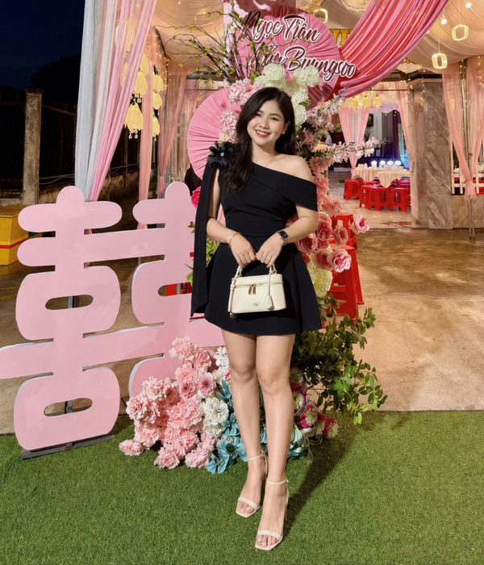
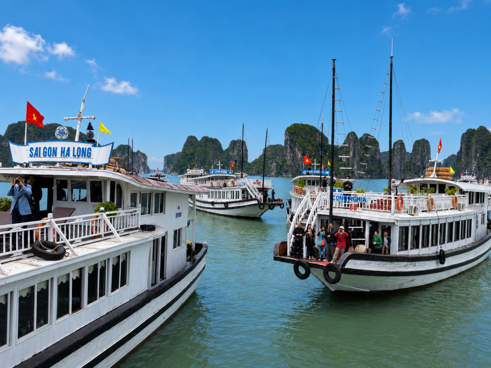
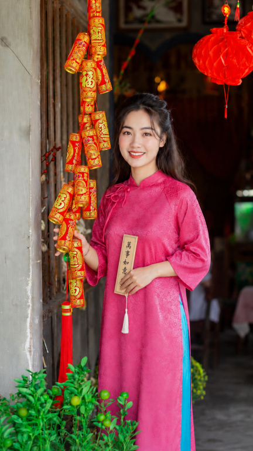

알파벳을 쓰는 베트남에서 만난 익숙한 글자
베트남은 우리가 보기에는 알파벳과 비슷한 문자를 사용하는 나라입니다.
거리의 간판도 그렇고, 휴대전화 문자나 각종 안내문도 대부분 ABC 계열의 글자로 적혀 있습니다.
그런데 베트남을 여러 번 다니다 보면 뜻밖의 장소에서 한국인에게 너무나 익숙한 한자를 만나게 됩니다.
제가 특히 자주 보았던 글자가 있습니다.
囍
처음에는 단순한 전통 장식이나 문양이라고 생각했습니다.
하지만 자세히 보면 기쁠 희(喜) 자 두 개가 나란히 붙어 있습니다.
우리에게도 익숙한 이른바 ‘쌍희’입니다.
두 사람의 기쁨, 두 배의 기쁨을 상징하는 글자입니다.
베트남에서는 보통 Song Hỷ(쏭 히)라고 부릅니다.
그리고 이 글자를 가장 자주 만날 수 있는 곳이 바로 결혼식입니다.
베트남 결혼식에서 자주 보았던 붉은색 囍
베트남 결혼식에 가면 붉은색 囍 글자를 어렵지 않게 볼 수 있습니다.
신랑과 신부가 앉는 자리 뒤편에 크게 장식하기도 하고, 결혼식 행사장이나 집의 대문에 붙여놓기도 합니다.
제가 베트남의 결혼식과 주택가를 다니면서 이 글자를 여러 번 보았습니다.
처음에는 크게 신경 쓰지 않았습니다.
그런데 어느 순간 이런 생각이 들었습니다.
“베트남은 알파벳을 쓰는 나라인데 왜 결혼식에 한자가 이렇게 자연스럽게 보일까?”
주택가를 다니다 보면 대문이나 외벽 장식에서도 한자나 한자와 비슷한 전통문양을 볼 때가 있습니다.
한국인인 저에게는 익숙한 글자입니다.
하지만 베트남에서 만나니 오히려 더 신기하게 느껴졌습니다.
그 궁금증을 따라가다 보니 베트남의 문자와 역사에 대한 재미있는 이야기를 알게 되었습니다.

지금 베트남에서 사용하는 문자는 무엇일까요?
현재 베트남어는 라틴 문자를 기반으로 한 Chữ Quốc Ngữ(쯔 꾸옥응으)라는 표기체계를 사용합니다.
우리가 흔히 말하는 ABC 계열의 문자를 기본으로 하고, 베트남어의 발음과 성조를 표현하기 위한 여러 기호가 더해져 있습니다.
예를 들어,
Việt Nam
Hà Nội
Hải Phòng
과 같은 글자를 베트남에서 쉽게 볼 수 있습니다.
한국 사람이 처음 베트남어를 보면 이런 생각이 들기도 합니다.
“알파벳이니까 어느 정도 읽을 수 있지 않을까?”
저 역시 비슷했습니다.
하지만 실제 베트남 사람이 발음하는 것을 들어보면 예상했던 소리와 상당히 다르게 들리는 경우가 많습니다.
글자에 붙어 있는 여러 기호와 베트남어의 성조 때문입니다.
겉으로는 익숙한 알파벳처럼 보이지만, 실제로는 베트남어의 소리를 표현하기 위한 독자적인 문자체계인 셈입니다.
베트남도 과거에는 한자문화권의 나라였습니다
베트남이 처음부터 지금과 같은 문자를 사용했던 것은 아닙니다.
베트남은 오랜 기간 한자의 영향을 강하게 받은 나라였습니다.
과거에는 Chữ Hán(쯔 한), 즉 한자가 행정과 학문, 문서 등에 사용되었습니다.
이후에는 한자를 바탕으로 베트남어를 표현하기 위해 발전한 Chữ Nôm(쯔 놈)이라는 문자체계도 사용되었습니다.
오늘날 베트남 사람들의 일상생활에서 한자를 직접 사용하는 경우는 거의 없습니다.
하지만 오랜 시간 이어진 한자문화의 흔적은 지금도 베트남 곳곳에 남아 있습니다.
오래된 사찰과 사당.
전통 건축물과 제단.
옛 문서와 족보.
그리고 결혼식에서 사용하는 붉은색 囍 장식까지.
제가 베트남에서 만난 익숙한 한자들은 단순히 우연히 남아 있는 장식이 아니었습니다.
베트남이 오랜 시간 한자문화의 영향을 받아왔다는 흔적 중 하나였습니다.
하롱베이의 ‘롱(Long)’은 정말 용(龍)일까?
베트남에 다니면서 저는 ‘Long’이라는 말을 여러 번 접했습니다.
그러다 문득 이런 생각이 들었습니다.
“롱…… 룡…… 용?”
혹시 우리가 알고 있는 용(龍)과 관계가 있을까?
알고 보니 실제로 관계가 있었습니다.
대표적인 지명이 바로 하롱(Hạ Long)입니다.
Hạ는 下
Long은 龍
한자로 표현하면 下龍입니다.
말 그대로 용이 내려온다는 뜻으로 이해할 수 있습니다.
한국식 한자음으로 읽으면 ‘하룡’입니다.
우리가 흔히 부르는 ‘하롱’이라는 이름과 한국 한자음의 ‘하룡’을 함께 놓고 보면 묘하게 비슷한 느낌이 있습니다.
전혀 관계없는 베트남어라고 생각했던 지명 속에 우리가 알고 있는 한자가 숨어 있었던 것입니다.

하노이의 옛 이름에도 용(龍)이 있었습니다
용과 관련된 이름은 하롱만 있는 것이 아닙니다.
현재 베트남의 수도인 하노이는 과거 Thăng Long(탕롱)이라는 이름으로 불린 시기가 있습니다.
한자로는 昇龍입니다.
한국식 한자음으로 읽으면 ‘승룡’입니다.
昇은 오를 승.
龍은 용 룡.
즉, ‘용이 오른다’, ‘승천하는 용’이라는 의미입니다.
하롱의 下龍.
탕롱의 昇龍.
베트남의 지명을 한자로 다시 살펴보니 갑자기 조금 익숙하게 느껴졌습니다.
평소 아무 생각 없이 부르던 지명에도 오랜 역사와 언어의 흔적이 남아 있었습니다.
저는 이런 사실을 하나씩 알게 될 때마다 베트남이라는 나라가 조금 다르게 보였습니다.
베트남어 속에도 익숙한 한자어가 많이 남아 있습니다
한자의 흔적은 오래된 건물이나 지명에만 남아 있는 것이 아닙니다.
지금 사용하는 베트남어 속에도 한자에서 유래한 단어가 많이 남아 있습니다.
이러한 어휘를 흔히 Hán-Việt(한월어·한베트남 한자어)이라고 합니다.
몇 가지 단어를 살펴보면 한국인에게 상당히 익숙합니다.
quốc gia / 國家 / 국가
đại học / 大學 / 대학
học sinh / 學生 / 학생
giáo dục / 教育 / 교육
văn hóa / 文化 / 문화
lịch sử / 歷史 / 역사
độc lập / 獨立 / 독립
tự do / 自由 / 자유
hạnh phúc / 幸福 / 행복
베트남어 발음만 들으면 처음에는 전혀 다른 단어처럼 느껴집니다.
하지만 한자를 함께 놓고 보면 우리에게 너무나 익숙한 단어들입니다.
저 역시 이런 단어를 하나씩 알게 되면서 베트남어가 조금 다르게 보이기 시작했습니다.
“어? 이 말…… 우리가 사용하는 한자어와 같은 뜻이네?”
알고 보면 단순한 우연이 아닌 경우가 많았습니다.
‘독립·자유·행복’을 베트남어로 보면
베트남의 공식 문서나 행정 관련 자료를 보다 보면 자주 볼 수 있는 문구가 있습니다.
Độc lập - Tự do - Hạnh phúc
처음에는 당연히 베트남어 문장으로만 보았습니다.
그런데 각각의 말을 한자로 대응해 보면 상당히 익숙합니다.
Độc lập / 獨立 / 독립
Tự do / 自由 / 자유
Hạnh phúc / 幸福 / 행복
한국식으로 표현하면 말 그대로,
독립 - 자유 - 행복
입니다.
처음 이 사실을 알았을 때 저는 꽤 신기했습니다.
발음도 다르고 사용하는 문자도 다른 두 나라입니다.
그런데 단어의 뿌리를 따라가 보면 우리가 매일 사용하는 한자어와 같은 의미를 가진 말이 베트남어 속에도 남아 있습니다.
베트남어 공부를 하다 보면 가끔 낯선 단어가 어딘가 익숙하게 느껴지는 이유 중 하나입니다.

알고 보면 조금 더 가까이 느껴지는 베트남
한국과 베트남은 지금 사용하는 문자도 다르고 언어도 다릅니다.
처음 베트남에 갔을 때 저에게 베트남어는 완전히 낯선 언어였습니다.
하지만 베트남의 문화와 언어를 하나씩 살펴보면서 생각이 조금 달라졌습니다.
베트남 결혼식장에서 보았던 붉은색 囍.
하롱베이의 Long, 龍.
하노이의 옛 이름 Thăng Long, 昇龍.
그리고 독립, 자유, 행복을 의미하는
Độc lập - Tự do - Hạnh phúc.
알고 보면 베트남에는 한국인에게 익숙한 한자문화의 흔적이 생각보다 많이 남아 있습니다.
저 역시 베트남인 아내와 국제결혼을 하고 베트남을 여러 번 오가면서 이런 작은 사실들을 하나씩 알게 되었습니다.
처음에는 전혀 다른 나라라고만 생각했습니다.
하지만 그 나라의 역사와 문화를 조금씩 알아가다 보면 의외로 익숙한 모습을 발견하게 됩니다.
저에게 베트남 결혼식장에서 만난 붉은색 囍 글자는 그런 발견의 시작 중 하나였습니다.
한베커플은 실제 한·베 국제결혼과 베트남 현지 경험을 바탕으로, 직접 보고 느낀 베트남의 생활과 문화 이야기를 전하고 있습니다.